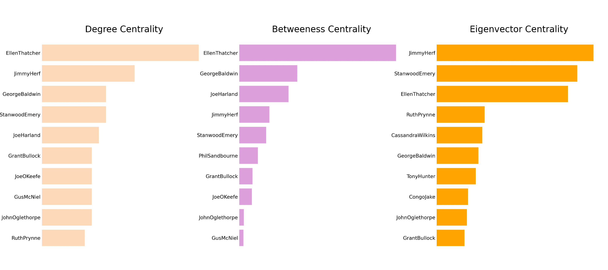
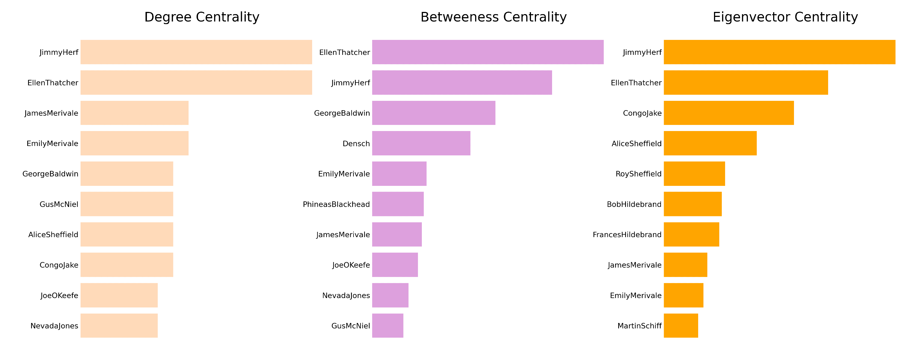

MANHATTAN TRANSFER: A NETWORK ANALYSIS
A network analysis based on characters interactions
Alessandra Failla
Abstract This paper covers the network analysis of John Dos Passos's novel Manhattan Transfer. The analysis is performed on undirected graphs representing the interactions between characters in each section of the novel. Interactions were extracted using Python to identify characters' unique identifiers in the text, provided during the encoding of the text based on TEI guidelines. Centrality measures were also extracted using Python. This article provides a comment on the resulting graphs and measures and aims at providing new perspectives on the novel and the role of its characters through the comparison of the obtained results.

Introduction
This work deals with the network analysis of John Dos Passos’ novel Manhattan Transfer, published in 1925. The novel is set in New York from the 1890s to the late 1920s and deals with the life of some inhabitants of the city in this time full of contradictions.
Manhattan Transfer is divided into three sections, each section is divided into chapters. The narration is non-linear, inspired by the cinematographic style. Each chapter features several different characters, and their stories intertwine to provide the reader with a complete picture of New York City during the Gilded Age.
This paper presents a network analysis of Manhattan Transfer based on the interactions among characters within the novel and it is structured as follows. The section on methodology is divided into four subsections that feature an explanation of the encoding of the text of the novel, the process of defining interactions between characters, a panoramic on the use of Python to develop a network based on characters interaction and to extract centrality measures, and a subsection related to the graph visualization using the software Gephi; in the following section, the results of the network analysis are presented for each of the three sections of the book and the whole text, along with a brief synopsis of the plot; the following section features a discussion of the result based on the novel; finally, the last section aims to provide conclusions.
This network analysis aims at presenting links and interactions between characters of the novel Manhattan Transfer with the use of computational tools, to provide additional insights into the feature of Dos Passos’s work. Interactions between individuals are represented in networks developed from each section of the novel. These networks are represented as undirected graphs having characters as nodes and their interactions as edges. The comparison of the graphs allows to observe the development of the relevance of the characters throughout the novel and draw conclusions about their role in it.
Methodology
The next sections aim at introducing the steps and necessary instruments to perform this network analysis. The first step was the introduction of characters’ IDs in the encoding of the novel and the definition of characters interactions. These IDs were then extracted using Python to build an interaction graph and calculate the related centrality measures. Finally, the software Gephi was used to obtain a visualization of the results.
A further necessary premise is related to the centrality measures used in this analysis. To compare character’s roles and relevance in the novel, three centrality measures were considered: degree centrality, which identifies the number of edges a node is connected to; betweenness centrality, which identifies nodes which appear more frequently in the shortest path connecting other nodes of the network; Eigenvector centrality, which measures the influence of a node in a network: nodes connected to nodes with a high degree will have a higher Eigenvector centrality.
1. Text Encoding
The first step to perform the network analysis was the encoding of characters’ IDs in the text of the novel. All characters’ IDs are listed in the TEI element <listPerson>.
Characters’ IDs have the form NameSurname when possible, Name or Nickname in case the surname or name are unknown. Not all individuals in the novel were provided with an ID; anonymous characters were excluded from the list, as well as irrelevant characters for the analysis. Within the text, IDs were included in the <persName> element enclosing the character’s name using the attribute @ref and a hashtag, as in the following example:
<persName ref=”#EllenThatcher”>
IDs were also introduced in the
<said who=”#EllenThatcher” aloud=”true” direct=”true”>
In this case, the ID was used to identify the character expressing the speech or thought enclosed in the <said> element.
The introduction of characters’ IDs allowed the automatic identification and extraction of characters’ locations in the text to identify all possible interactions. This was possible using Python as described in the following section. More information about the encoding of characters according to the TEI guidelines is available in the section TEI encoding of this website.
2. Interaction Modelling
The development of graphs based on characters interactions required the definition of the concept of interaction. For the sake of this analysis, an interaction between two individuals in the novel is defined as the presence of both IDs within a space of 15 words (with stopwords being removed - see the following subsection).
The distance value of 15 words was adopted after comparing the different results obtained by adopting the threshold values of 10, 15, 20, and 30. The graphs obtained in the chosen configuration were more representative of the relations between characters of the novel. Due to Dos Passos's non-linear narrative style and his way of jumping from storyline to storyline within a few paragraphs, some links between the characters who do not interact in the novel were included in the graph. This happens because their names appear at the end of a paragraph and the start of the next one, but due to an abrupt change of setting, the characters were not in relation to each other. The value 15 was considered the best compromise between including as many interactions as possible, while not having an excessive number of false positives.
An additional measure to counteract false positives was to implement a threshold of 3 interactions between two characters for them to be considered linked in the graphs.
3. Network and centrality measures with Python
The network developed described in this section was inspired by the network analysis performed by Dimitris Manolidis in his article Network Analysis of the Romance of Three Kingdoms.
Starting from the encoded text and the definition of interaction described above, Python was used to perform the extraction of characters’ IDs and create a graph based on characters’ interactions. All the functions developed for this analysis are available in this Jupyter Notebook. A summary of the main steps is presented below.
The first function allowed any encoded text to be cleaned. The symbols were removed, and newlines were replaced with spaces. A regular expression (RegEx) was employed to find all mentions of characters in the text and substitute them with a unique ID. These codes were inserted in a dictionary as keys, with the number of occurrences of each character as values. The RegEx used can be seen below:
<(persName|said) (ref|who)=\"#.+?/(persName|said)>
The function returns the full text with IDs instead of characters’ names and tags and a dictionary of characters' occurrences.
The cleaned text was tokenized and stopwords were removed using a list from the library Natural Language Toolkit. This resulted in a list containing each word of the text. The distance between tags was calculated using this list, using the indexes corresponding to characters and simply subtracting them.
The result was a dictionary with all interaction, with characters’ IDs as keys and nested dictionaries as values containing other characters’ IDs and the number of interactions that occurred between them and the character used as the key.
Then, all characters with zero interactions were removed from the dictionary; the remaining characters were used as nodes for the final graph and are connected through edges that represent their interactions.
The data obtained can be used to compute centrality measures that allow the analysis of the relevance of characters. The libraries NetworkX, Pandas, and matplotlib where used to obtain all centrality measures and a graphical representation of the top 10 characters for each centrality, shown in the following sections.
4. Graph visualization with Gephi
The data obtained with the Python scripts were used to create an undirected graph, which was visualized using the software Gephi. IDs are used as labels for the nodes representing the characters, which are connected to edges representing their interactions. Node sizes were chosen to vary proportionally to the degree of each node, so nodes with a higher number of connections would be larger.
Different colors are used to identify different communities, which are divided based on the modularity measure. Communities can be connected to the rest of the graph or completely disconnected, as is the case in some of the graphs that will be presented.
For the sake of the analysis four different graphs were created, one for each section of the novel and one final graph representing the interactions in the whole novel.
Results
1. Section 1
1.1 Synopsis
Manhattan Transfer is set between the 1890s and 1920s in New York and is comprised of three sections. The novel starts with the birth of Ellen Thatcher, daughter of the accountant Ed Thatcher and his wife Susie Thatcher. In the meantime, Bud Korpenning has arrived in New York by boat, willing to start a new life in the city. We also meet a New York young lawyer George Baldwin, who takes the case of a milkman hit by a train car, Gus McNiel; Baldwin has an affair with his wife Nellie McNiel.
The story continues with the arrival of young boy Jimmy Herf and his mother Lily in the city. Lily is ill and dies soon, while Jimmy remains in the city with his aunt Emily, uncle Jefferson and cousins Maisie and James Merivale. He grows up and starts a career as a journalist. Meanwhile, Ellen has also grown up. She has become an actress and travels to Atlantic City, where she meets a man named John.
More characters are introduced, such as the young sailors Congo Jake and Emile Loustec, who are travelling to New York and plan to stay there to find a job.
This part of the novel ends with the death of Bud Korpenning, who throws himself from the Brooklyn bridge out of desperation.
1.2 Graph Description

The graph representing the interactions among characters in the first section has 24 nodes, representing the characters, and 33 edges, representing their interactions.
The first possible observation is that this graph consists of four separated communities.
The largest community takes up 29,17% of the graph and consists of seven members. The characters in this community are Jimmy Herf and his family: his aunt and uncle Emily and Jefferson Merivale, his cousins James and Maisie Merivale, his cousin Joe Harland and his mother Lily Herf. Jimmy Herf and Emily Merivale show the highest degree of the community, 6, followed by the other characters with degrees of 3 or 4.
An equally large community also takes up 29,17% and consists of seven characters: Ellen Thatcher, Susie Thatcher, Ed Thatcher, Alice Vaughan, John Oglethorpe, Marcus Antonius Zucher, and Rosie Silverman. Ellen Thatcher has a degree of 4, the highest of the community, followed by a degree of 3 of her parents, while the other characters of this community all have a degree of 1.
The third-largest community consists of six members and takes up 25% of the entire graph. The main figures are George Baldwin, Gus McNiel, and Nellie McNiel; George Baldwin is connected to 2 further characters, Philip Sandbourne and Specker, and shares a connection to Mr. Emery with Nellie McNiel. George Baldwin has the highest degree of 5 in his community, followed by Nellie McNiel with a degree of 3.
The fourth and last community consists of four characters, Emile Loustec, Congo Jake, Ernestine Rigaud, and Marco Olafson, and takes up 16,67% of the graph. Their degrees range from 1 to 3, with Emile Loustec with a degree of 3.
It is possible to observe that the largest networks are the ones of the characters with the highest degree, Jimmy Herf and Emily Merivale, and Ellen Thatcher.
Different from the graphs under examination in the next sections, here the represented communities are disconnected since the first section follows the story of each community independently, while characters from different communities will meet later in the novel.
1.3 Centrality Measures

The charts above present the ten characters with the highest degree, betweenness, and Eigenvector centralities. By observing the results related to degree centrality, it is possible to notice that Jimmy Herf and Emily Merivale show the highest value of 6. Including Jimmy and Emily, five members out of seven of their community, Joe Harland, Jefferson Merivale, and Maisie Merivale are included in the first chart. George Baldwin is in the third position, as he has a degree of 5. Nellie McNiel, who belongs to George Baldwin’s community is in 7th position and is the only character from George Baldwin’s community. Members from a separated community, Ellen Thatcher, Ed Thatcher, and Susie Thatcher occupy the 5th, 6th and 9th positions, with respective degrees of 4, 3, and 3. They present a rather lower degree compared to Jimmy Herf’s community. Finally, we observe that the smallest community which consists of Emile Loustec, Congo Jake, Marco Olafson, and Ernestine Rigaud does not appear in the ranking, due to the low degrees of its members.
The results related to betweenness centrality show that Ellen Thatcher presents the highest value. Ellen is connected to four characters, among them, two are connected only to her. This determines a higher betweenness centrality in contrast for example to George Baldwin, who occupies the second position in the ranking. Baldwin is connected to five people, which are also connected to each other; so, he is connected to Nellie McNiel, who is also connected to Gus McNiel and Mr. Emery, both connected to George Baldwin. This means that George shares his function of “bridge” among his connections with other characters of his community, while Ellen is mostly the only connection to some characters, so she represents the only “bridge” between them, as she lies in the shortest path connecting several nodes. The following characters with the highest betweenness centrality are Ed and Susie Thatcher since they are both connected to another isolated character besides Ellen.
Jimmy and Emily, who follow in the ranking, are both connected to the same 5 characters and are also connected to each other so that they are both hubs of the community and share the function of bridges connecting to other characters. The only character with a relatively high measure from the smallest community is Emile Loustec, who occupies the 7th position; he is connected to three people, and one of them is only connected to him so that he shows the highest betweenness centrality than the other members of his community.


These charts represent the Eigenvector centrality of the characters in the first section. Since the network for the first section of the novel consists of four disconnected communities, it is not possible to calculate Eigenvector centrality for the whole graph. Eigenvector centrality is not well-defined for disconnected graphs since in this case, the centrality scores of the individual elements are independent.
The graph was then divided into four different subgraphs to obtain more significant results than the one shown in the figure above.
The first is related to the community with George Baldwin as the character with the highest degree. Here, we see that Nellie McNiel has the highest Eigenvector centrality, due to her strong connection with the most relevant character of her community, George Baldwin. She is followed by Baldwin, whose measure is influenced by his high number of connections.
The second chart represents the community with Ellen Thatcher as the character with the highest degree. In this case, Ed Thatcher has the strongest connection to Ellen and a strong connection to his wife Susie and therefore the highest Eigenvector centrality, followed by his daughter Ellen.
In the third chart, Jimmy Herf shows the highest Eigenvector centrality in his community. He and Emily Merivale show the highest degree in their community, but due to Jimmy’s strong connection to his mother Lily Herf, he has the highest Eigenvector centrality, followed by Maisie Merivale, with a relatively strong connection to both Emily and Jimmy, followed by Emily Merivale.
Emile Loustec shows the highest Eigenvector centrality in his community. Differently from the results related to other communities, he is the character with both the highest degree centrality and Eigenvector centrality within his community.
2. Section 2
2.1 Synopsis
The second section consists of eight chapters. In the beginning, we learn that Ellen has become a famous actress in New York and that she has attracted the attention of several suitors. We make the acquaintance of a new character, Joe Harland, a cousin of Jimmy’s who has become a poor drunkard after a successful career in the stock market ended ruinously. He becomes friends with another character, Joe O’Keefe, a Union man involved in politics who also knows George Baldwin and Gus McNiel.
A new character is introduced, Stanwood Emery, an ex-Harvard student thrown out of school, who begins an affair with Ellen, who is married to John Oglethorpe. Jimmy is a friend of Stan and helps him to get away with his affair. On several occasions, he meets Ellen.
The lawyer George Baldwin has also fallen in love with Ellen. He is now friends with the ex-milkman Gus McNiel, who is currently a successful wealthy man involved in politics. McNiel tries to convince Baldwin to run for office, without success. Baldwin is not interested, since he is more focused on his practice, the failing relationship with his wife Cecily, and his unrequited love for Ellen, who he will end up threatening with a gun out of jealousy.
Meanwhile, World War I has started, and Jimmy expresses his wish to go to Europe. His friend Stanwood breaks Ellen’s heart by marrying another girl names Pearline. Shortly after, he dies in a fire. We discover that Ellen is pregnant with his baby and decides to raise it.
2.1 Graph Description

The graph related to the second section of Manhattan Transfer features 32 nodes or characters, and 75 edges, that represent the interactions between them.
The graph shows three different communities, all connected with each other.
The first, biggest community, takes up to 53,12% of the characters in the graph and consists of 17 nodes. Within this community, Ellen Thatcher has the highest number of connections, with a degree of 22. She is the common node among many small clusters that are part of her community but are separated from each other in the graph as in the novel. Decreasing the resolution of the modularity would split up the community into smaller groups, one of them being the cluster with George Baldwin at its center. He is the second most relevant character, as he also has a relatively high degree of 9, followed by Gus McNiel, with a degree of 7. Other examples of groups in this community connected to Ellen consist of Cassandra Wilkins, her friend, and her boyfriend Morris McAvoy, or Ed Thatcher, Ellen’s father, and his friend Mrs. Culveteer.
Ellen Thatcher’s strongest connections besides the ones with George Baldwin and Cassandra Wilkins are with characters from a different community, Stanwood Emery and Jimmy Herf. Their community takes up 28,12% of the graph and consists of 9 nodes. Jimmy and Stanwood present the highest degrees in their community, 13 and 9. Jimmy is however the central character in this cluster, as he is connected to all its members. He has the strongest connection with Stanwood Emery, who is his friend and Ellen’s lover. In fact, Ellen and Stan share a strong connection. Jimmy has several connections. Among others, Jimmy interacts with Congo Jake, Grant Bullock, Ruth Prynne, and Tony Hunter. A notable fact is the presence of John Oglethorpe, Ellen’s husband, in this community, instead of his wife’s.
The last community in the second section of the novel is the smallest. It takes up 18,75% of the characters in the graph, 6 nodes. Joe Harland and Joe O’Keefe are the most relevant characters, as they present degrees of 8 and 7. Joe O’Keefe is a character introduced in the fourth chapter of section 2. Joe Harland is also connected to Jimmy.
The number of nodes and edges in the second graph has significantly increased compared with section 1, as the number of characters and interactions in the story increase.
2.3 Centrality Measures
The results related to degree centrality confirms what is shown in the graph, as we see that Ellen Thatcher has the highest degree centrality, followed by the other relevant characters that were mentioned in the previous section, who also have a high number of connections: Jimmy Herf, George Baldwin, and Stanwood Emery.
As shown by the chart, Ellen Thatcher also has the highest betweenness centrality among the characters of the novel that appear in this section. This can be seen as a direct consequence of her high number of interactions; Ellen is connected to several isolated characters or characters with few connections so that she often lies in the shortest path between them and the other characters in the graph and characters from other communities.
Jimmy Herf, on the other hand, does not occupy the second position of this ranking, as in the case of degree centrality. Here, we find George Baldwin, followed by Joe Harland. Even if these characters have a lower degree, they are the shortest connection among several characters, differently from Jimmy since they interact with several isolated characters or with characters with a low degree and connect them to other characters from their or other communities.
Jimmy Herf occupies the highest position in the chart related to Eigenvector centrality, followed by Stanwood Emery and Ellen Thatcher. Characters with a high Eigenvector centrality are the ones connected to the most relevant characters in a graph, so with characters with the highest degree. In this case, both Jimmy and Stanwood have a strong connection with Ellen, which has the highest degree (22), so they occupy the first positions, as Ellen is a considerably influential character. The connection between Jimmy and Stanwood also influences their Eigenvector centrality, as they are relevant characters as well and present thus a high degree.
Ellen Thatcher occupies the third position in the chart, as she is also connected to several relevant characters, such as Jimmy, Stanwood, and George Baldwin. Their degree is however not as high as Ellen’s.
The other characters in the ranking have a much lower Eigenvector centrality, not comparable to the centrality of the characters mentioned above.
3. Section 3
1.1 Synopsis
The third section of the novel consists of five chapters. It is set after the end of World War I. The soldiers are returning home, among them Jimmy Herf and his cousin James Merivale. We discover that Jimmy and Ellen Thatcher were in Europe together and got married there. At the beginning of the third section, they are sailing back to New York with Ellen’s and Stan’s baby, named Martin.
We meet George Baldwin again, who has decided to run for office on a reform ticket, a decision that angers the reactionary Gus McNeil. Baldwin is having a relationship with Nevada Jones, who is also having an affair with Tony Hunter.
We meet again the French sailor Congo Jake, who has invested in clandestine traffic of alcoholic beverages in the era of Prohibition. We also follow the story of the veteran Dutch Robertson and his girlfriend Francie. He is driven to crime by poverty and gets arrested, and sentenced to twenty years in prison.
James, Maisie, and Emily Merivale return in section 3. We learn that Jeff, Emily’s husband, has died. Maisie is engaged to a man, Jack Cunningham, but another woman, Jessie Lincoln, claims that he is already married to her. At the end of this section, we meet Congo again. He is now named Armand Duval and has become a millionaire.
Further characters are Rosie and Jake Silverman, who never meet the other characters of the story.
At the end of the section Jimmy and Ellen divorce, since she does not love him anymore. Ellen has quit her occupation as an actress and marries George Baldwin. Jimmy meets his friends, the Hildebrands and the Sheffields, and confesses that he does not want to live in New York anymore. At the end of the last chapter, he leaves the city without revealing his destination.
3.2 Graph Description
The graph representing the interactions in section 3 of Manhattan Transfer contains 46 nodes and 80 edges. As the other graphs in this analysis, it contains characters that participate in interactions in the novel.
The graph contains nine communities. The largest community is 28,26% of the graph and consists of 13 members. The second largest community measures 19,57% of the graph and counts 9 nodes, while the third-largest community is 13,04% of the graph and contains 6 characters. The remaining communities consist of 4, 3, or 2 characters. The two 2-people communities are disconnected from the rest of the graph. Their members are Joseph Parker and Antonio Camerone, Rosie and Jake Silverman, Francie and Dutch Robertson, and Ruth Prynne and Billy Waldron.
The largest community of 13 members includes the two characters with the highest degrees of 15, Ellen Thatcher and Jimmy Herf. A further relevant character in this community is Congo Jake, with a degree of 6 and a strong connection to Jimmy Herf. It is possible to observe that Ellen and Jimmy are each connected to their isolated groups of characters and do not share several connections: Ellen is connected to her ex-husband John Oglethorpe, to her friends Hester Vorhees and Cassandra Wilkins, while Jimmy has a strong connection to Congo Jake. Jimmy and Ellen share some connections within the community (Bob and Frances Hildebrand, Martin Emery among others) and outside the community (James and Emily Merivale).
Jimmy Herf also has strong connections to characters from a different 4-members community, that includes his friends Alice and Roy Sheffield. The strongest connection is to Alice Sheffield.
The community consisting of 9 characters features the figures of George Baldwin and Gus McNiel at its center, both with a degree of 6. They have a strong connection, but Gus McNiel has an even stronger connection to Joe O’Keefe. Other characters of this community have a relatively high degree, such as Nevada Jones, with a degree of 5. George Baldwin is also connected to Nevada, as in this section they are having an affair. George Baldwin, Nevada Jones, Joe O’Keefe, and Francie are the only characters of the community connected to Jimmy or Ellen, the most relevant characters in the graph. We observe the strongest connections between the relative communities like the one between George Baldwin and Ellen Thatcher.
A member of the same community as George Baldwin, Densch, is the only connection to a further, smaller community, that consists of three members: Phineas and Cynthia Blackhead and Gladys Gaston, with Phineas Blackhead as the most relevant character among them.
The third-largest community of the graph consists of 6 nodes. The two most relevant characters are James and Emily Merivale, both with a degree of 7. They both have a strong connection with Maisie Merivale, James’s sister and Emily’s daughter, and James has an even stronger connection to Jack Cunningham, Maisie’s future husband, as they meet several times in the novel, even when not in Maisie’s presence.
A further community consists of three members, with a relatively high degree compared to other low-member communities in this graph. It includes Roy and Alice Sheffield, Martin Schiff, and Alice’s lover Buckminster. Roy, Alice, and Martin are all connected to Jimmy, even if Roy and Alice’s connections to him are stronger.
A further community consists of members Anna Cohen and her boyfriend Elmer; this community is almost isolated since the two characters mainly interact with each other in their story parallel to the novel; the only connection of this community to the rest of the graph is to Ellen since Anna and Ellen meet in chapter five.
The community formed by Rosie and Jake Silverman and the detective Mr. Rogers is completely isolated from the rest of the graph. Jake and Rosie share a strong connection: we shortly meet these characters in chapter III and they do not share connections with the rest of the graph.
The same happens with the 2-members community consisting of Joseph Parker and Antonio Camerone: two marginal characters.
Finally, the last community consists of Billy Waldron and Ruth Prynne, two friends that meet in chapter II. Ruth is also connected to Ellen, and this is the only connection between this community and the rest of the graph.
3.3 Centrality Measures
The chart related to degree centrality shows that Jimmy Herf and Ellen Thatcher have the same degree of 15. They are followed by James and Emily Merivale, which belong to the same community, and George Baldwin and Gus McNiel, who belong to a different community. The next character in the ranking is Alice Sheffield, a member of another community, while she is followed by Congo Jake, who belongs to Jimmy’s and Ellen’s community. All three main communities are thus represented in this ranking. Jimmy and Ellen have however a significantly higher degree than the other characters in the list.
We observe a different situation in the chart representing betweenness centrality. Here, Ellen Thatcher occupies the first position, as she shows a higher betweenness centrality than the other characters. She is followed by Jimmy Herf and George Baldwin, all characters with a high degree and in the shortest paths connecting different parts of the graph. Their high number of connections with isolated characters influences their betweenness centrality.
A further character, Densch, appears at 4th position in this ranking; he is a rather secondary character in the story. Even if he has a lower degree centrality, he shows a high betweenness centrality due to his connections to more isolated characters, such as his wife Serena Densch and Phineas Blackhead, who is connected to two other isolated characters.
The chart representing the Eigenvector centrality of the characters of Manhattan Transfer shows that Jimmy Herf presents the highest value, followed by Ellen Herf and Congo Jake. These three characters are all connected with each other; it is possible to observe a strong connection between Ellen and Jimmy, and Jimmy and Congo. Jimmy has the highest Eigenvector centrality since he is connected to the most relevant characters of this section of the novel, which are Ellen Thatcher, Congo Jake, George Baldwin, Alice Sheffield, and the two Merivales among others. Jimmy is followed by Ellen, who also has influential connections with relevant characters, which she mainly shares with Jimmy, her main connection. However, she does not share the connection with Alice Sheffield, which has a relatively high degree as she appears in the 7th position in the chart representing degree centrality.
By observing the rest of the chart, it is possible to recognize that the remaining characters all have a connection to either Jimmy or Ellen or both; this surely influences their Eigenvector centrality, which increases through connections to relevant characters.
4. Full Text
4.2 Graph Description
This graph represents the interactions considering all three sections of the novel Manhattan Transfer. It consists of 75 nodes, representing all characters involved in at least 3 interactions in the novel, and 164 edges, representing such interactions.
In this graph, it is possible to recognize 9 communities, three of them significantly larger than the others.
One of the two largest communities makes up 24% of the entire graph and consists of 18 nodes. The character with the highest degree centrality in this community is Ellen Thatcher, with a degree of 33. She has a significantly higher degree than the other characters in her community; the character with the second highest degree is John Oglethorpe, with a degree of 7, followed by Cassandra Wilkins with a degree of 6. Compared to Ellen, the other characters of her community have a quite low degree. It is possible to see that Ellen is also connected to several characters from other communities, who has higher degrees than the members of her community. The strongest connection is between Ellen and Jimmy Herf. She also has a strong connection with Stanwood Emery and with George Baldwin.
Another community is 24% of the graph and counts 18 members. George Baldwin is the character with the highest degree, 14, followed by Gus McNiel, with a degree of 12, and by Joe O’Keefe and Joe Harland, with a degree of 11. Here, we observe strong connections: between Gus and George; George and Nellie McNiel; Joe O’Keefe and Joe Harland; Gus McNiel and Joe O’Keefe. All these characters, besides Nellie, are connected to both Jimmy and Ellen and to each other and present a relatively high degree; thus we expect them to have a high Eigenvector centrality.
The second largest community consists of 18 nodes and is 21,33% of the entire graph. The character with the highest degree is Jimmy Herf, with a degree of 27. He is followed by Congo Jake, with a degree of 10, and Stanwood Emery, with a degree of 9. Both have a strong connection with Jimmy. Jimmy is linked to several characters from other communities, such as George Baldwin, Joe Harland, Gus McNiel, and the Merivales, but he also has strong connections within his community. The strongest is with Stanwood Emery, followed by Congo Jake. A third, strong connection is the one to his mother, Lily Herf. Jimmy’s strongest connection is with Ellen Thatcher.
It is possible to observe six smaller communities, one of 7, two of 3, and three of 4 members each. The largest one consists of Jimmy Herf’s relatives James, Maisie, Emily, and Jefferson Merivale, all connected to each other and to Jimmy, and further, less relevant characters. The smallest communities of three or two members can represent characters with a parallel story that almost do not cross paths with the main characters and their storylines, such as Francie and Dutch Robertson or Rosie and Jake Silverman and detective Rogers, or groups of characters also connected with the main characters, but who present a considerably strong connection since they often appear together or have long conversations with each other, such as Alice and Roy Sheffield, Martin Schiff, and Buckminster.
This graph confirms that Ellen Thatcher and Jimmy Herf are the most relevant characters in terms of degree, as they have the highest number of connections with other characters from the novel. It is possible to see that the novel contains an intricated network of relationships and that several connections between characters from different communities are also present. A further observation on the graph is the high number of isolated characters, who are only connected to one person in the graph. As in the previous centrality results, we expect the characters connected to the highest number of isolated characters to have a high Betweenness Centrality. Examples of isolated characters are among others Pearline Anderson, Billy Waldron, Ernestine Rigaud, and Serena Densch.
4.3 Centrality Measures

The chart representing the degree centrality confirms what is shown in the graph, with Ellen Thatcher having the highest degree centrality as she has the highest number of connections, followed by Jimmy Herf and George Baldwin, Joe Harland, Joe O’Keefe, and Gus McNiel, all four belonging to the same community. All listed characters have in common the fact that they share multiple connections within the same community and are also connected to external communities.
Ellen Thatcher shows the highest betweenness centrality. It is possible to observe a significant difference between her value for this centrality measure and the values of the other characters in the ranking. This is because that Ellen not only has a high number of connections, but several characters connected to her are isolated or connected to other characters without any further connections with members belonging to other communities. This is different from Jimmy Herf’s situation; several nodes connected to him are also connected to members from other communities so that his betweenness centrality is lower than Ellen’s.
A character with a high betweenness centrality is George Baldwin. It is possible to notice that in this case, the characters with the highest degree centrality are also the characters with the highest betweenness centrality. This is not the case for Densch, who has a degree of 4 but a high betweenness centrality. This is since fact that he lies in the shortest path of four isolated characters to the rest of the graph. This is also the case of Susie Thatcher, who lies at the 7th position of the chart and has a degree of 3 but links an isolated community to the rest of the graph.
Differently from the charts related to degree and betweenness centrality, Jimmy Herf shows the highest Eigenvector centrality. He is followed by Ellen Thatcher, Stanwood Emery, and Congo Jake. Jimmy has a lower number of connections than Ellen, but his connections to several relevant characters - Ellen, Congo Jake, Stanwood Emery, and George Baldwin among others - influence his Eigenvector centrality. Ellen is connected to relevant characters such as Jimmy, George Baldwin, Cassandra Wilkins, and Stanwood Emery, while her other connections are quite weak. The following characters in the ranking all benefit from their connections to Jimmy and Ellen, which have a great influence on their Eigenvector centrality. Among them, Lily Herf is the only character that is not connected to Ellen Thatcher.
Discussion
1. Section 1
The first graph contained in this article is related to the plot of the first section of Manhattan Transfer. While other sections of the novel focus on the relationships among the characters that were presented, this section focuses on four storylines that develop autonomously; each of them involves one of the communities shown in the graph.
We meet Jimmy Herf as a child as he is travelling to New York with his mother Lily. This explains the strong connection with her as shown in the graph. Once they reach New York, they meet their relatives Emily, Maisie, James, and Jeff Merivale. Jimmy develops strong connections also with the other members of his family, Jefferson, James, and Maisie Merivale; Lily Herf on the contrary has weak links to these characters since she makes her first appearance and then dies in chapter four. Jimmy will grow up with the rest of his family. Joe Harland is rather a marginal character in the community; he is a cousin of the Herfs and Merivales but is not well accepted in the family. His presence in the graph is due to his sudden appearance at a family dinner; as we see, he has weak connections to only three characters of this community.
Section one begins with the story of Ellen’s birth. Ed Thatcher and Susie Thatcher are her parents. Ellen, as Jimmy, is a child in the first four chapters of the first section, so we can see that the connection to her family, consisting of Ed and Susie Thatcher, is strong. Later in this section, she will spend time with her friend Alice Vaughan, and will later meet John Oglethorpe, the man she will marry. Marcus Antonius Zucher, a German man who Ed Thatcher meets and drinks with right after the birth of his daughter Ellen, is not a relevant character in the novel; he only interacts with Ed in this context and does not appear again later but is included in the graph since they have a considerably high number of interactions.
The strong connection between George Baldwin and Nellie McNiel is due to their frequent appearances related to their hidden affair. George is also connected to Phil Sandbourne, a friend of his, and Specker, Phil’s colleague; they have dinner together at the end of chapter three. He also meets Mr. Emery shortly after meeting Nellie McNiel in his study; he also appears in the graph, with a weak connection to both, although he is not a relevant character in the novel.
Finally, Emile Loustec, Congo Jake, and Marco Olafson all appear in the second chapter. At the beginning of the novel, Emile and Congo, who share the strongest connection within the community, are two sailors who travel together to the city and then remain there to work. They meet later in the same chapter and have a conversation with a new friend, Marco Olafson; Congo and Emile appear then again in chapter 4, where they talk about Ernestine Rigaud, a woman Emile Loustec is in love with. The main characters of this community are Congo Jake and Emile Loustec; their story will continue in the next sections of the novel and will intertwine with the stories of characters from other communities.
It is worth mentioning that one of the main characters of the first section, Bud Korpenning, does not appear in the graph. He never crosses paths with the characters represented in the graph and never interacts with any of them. He only appears in the first section - he commits suicide at the end of it. The lack of visibility of Bud Korpenning is both a showcase of the limits of the methodology chosen, as well as a potential motivation for which the communities in the section are disconnected. Bud represents a pivotal character in the first section, limiting the space for the development of other characters, as reflected in the graph.
2. Section 2
The graph related to the second section differs greatly from the first graph as it contains a higher number of characters and it does not present any isolated cluster, since all communities are connected to each other. In the second section, several new characters are introduced.
Ellen Thatcher is the clear protagonist of section two, with 22 edges that connect her to characters from all communities. This reflects her several relations with different men, first John Oglethorpe, her husband, who however does not appear as often as Stanwood Emery, Ellen’s lover, with whom she has a stronger connection.
We observe, however, that Ellen and John belong to different communities. This is because at the end of chapter III they decide to get divorced so that their contacts decrease. We see that John is connected to Jimmy Herf and Stanwood Emery, Ellen’s lover. This results from the dialogue that takes place the night Oglethorpe surprises Ellen with Stanwood at Jimmy’s apartment. The failure in their marriage is evident from their weak connection, signaling that both characters are not invested in the relationship.
The strong connection between Jimmy Herf and Stanwood Emery reflects their friendship in this section of the novel, while Jimmy and Ellen meet for the first time and spend time together as Jimmy helps her and Stan get away with their affair. Jimmy and Stanwood have a strong connection and their relation to Ellen also influences their Eigenvector centralities, which are the highest in this section, followed by Ellen’s.
A further man involved with Ellen Thatcher is George Baldwin, who is deeply in love with her but is rejected by the protagonist. Ellen’s connection to several, sometimes isolated characters is also reflected in her high betweenness centrality, as she is often the closest connection between characters that do not interact in this part of the novel.
Comparing this graph to the one of the first section, it is possible to notice that Ellen’s and Jimmy’s strong connection to their families is not present anymore. The only remaining character is Ed Thatcher, connected to Ellen, while her mother Susie has died. The Merivales, present in the first section, are not present here. We also notice that Emile Loustec, a relevant character in the first section, does not appear in the graph, as he is not mentioned in this section of the novel. We notice that Gus McNiel’s relevance increases, as he becomes friends with George Baldwin and tries to convince him to run for office.
A further new character in this section is Joe O’Keefe. He is a member of a worker’s union in New York and is involved in workers’ politics. In the second chapter, he will meet Joe Harland, a relative of Jimmy Herf’s that used to have a successful career in finance but became a drunkard after his losses. They meet several times throughout the section and share thus a strong connection.
3. Section 3
In the graph of the third section, it is possible to observe that the structure of the communities has changed. Ellen and Jimmy now belong to the same community as they have gotten married in Europe during the war. It is evident that the two characters are at the center of this community, but Jimmy’s connections are stronger than Ellen’s. Jimmy’s betweenness centrality increases with his degree centrality as he has several new connections in this section of the novel.
Baldwin and McNiel, alongside the members of their communities, are not part of Ellen’s community anymore, as their story develops separately from Ellen’s and Jimmy’s. The only relevant connection between the two communities and does not result from sporadic meetings is between George Baldwin and Ellen Thatcher, who will get married at the end of the section. It is possible to observe that Baldwin’s betweenness centrality increases, probably due to his new connections in this section of the novel.
A group of characters present in the first graph who had disappeared in section two consists of the living members of the Merivale family and their connections. The three Merivales share strong connections, but it is possible to notice that the relationship between James and Emily is stronger than the relationship of both characters with Maisie Merivale, as she does not appear nor speak often in this part of the novel. Due to their relevance in this section, Emily and James Merivale have the highest degree centrality after Jimmy and Ellen. Jack Cunningham, Maisie Merivale’s future husband and fiance, is also part of the community, as well as Jessie Lincoln and her maid. Jessie is Jack Cunningham’s real wife, who meets the Merivales to tell the truth about her husband.
The several more isolated communities in this graph represent the autonomous stories that develop throughout the novel and come to an ending in the third section. Dutch Robertson and his girlfriend Francie are an example. We meet Dutch in chapter 1, while he is sailing back to New York with Joe; throughout the chapters of this section, we meet him again and observe his increasingly bad economic situation. In chapter four, Dutch decides to undertake criminal activities and drags Francie alongside. They then get arrested; Jimmy Herf will read about their story in the newspaper.
The couple consisting of Anna Cohen and Elmer is the protagonists of a parallel story throughout the novel; their only connection to the rest of the graph is between Anna and Ellen, who meet in chapter five, as the clothing shop where Ellen is in catches fire and Anna is almost burnt to death.
Another independent story, as reflected by the graph, is the one related to Rosie and Jake Silverman, who are part of a community disconnected from the rest of the graph. We meet these characters in chapter III, as Jake is involved in criminal activities, and in the same chapter he is arrested. They do not share connections to the rest of the graph; their story is a narrative stratagem to represent a further part of the society and the contrasts typical of the Jazz Age, as for the story of many characters of the novel.
The last independent community consists of Joseph Parker and Antonio Camerone, two marginal characters who live on the street; they are only part of one scene, as they meet a clochard on the street that appears to be deranged and listen to his monologue. They function as spectators of New York’s poor side of society and its contradictions.
4. Overall Discussion
The graph representing the interactions in the whole novel shows an intricate network of connections among the characters of the novel. Analyzing the graphs of each section allowed to observe the development of the stories and the relations between the characters of Manhattan Transfer. Observing the graph referred to the full text of Dos Passos’s work allows to make some final considerations about such relations.
It is possible to distinguish some patterns in the communities that appear throughout the whole novel; we can also recognize that the central characters of all graphs are a constant, such as Jimmy Herf, Ellen Thatcher, and George Baldwin. The structure of the communities changes throughout the novel; the main characters Ellen Thatcher and Jimmy Herf belong to different communities in the first and second sections, while they are part of the same community in the third. In the overall graph, they are members of different communities, Ellen’s one being slightly larger. She has more connections than Jimmy, but these are less strong than his. We could state that while Ellen knows many characters, she does not have many friends, at least not as many as Jimmy’s.
We recognize two further communities that were present already at the beginning of the novel: George Baldwin’s and the Merivales' communities. While the Merivales disappeared in section two, George Baldwin’s community started in section 1 and kept increasing, alongside Baldwin’s successful career throughout the novel.
The several smaller communities, whose number increased throughout the novel, represent the parallel stories of secondary characters who are not part of the main characters’ life and story. Dos Passos introduced their stories in the novel as exemplary of the contradictions of the society of the time, which are present in Jimmy’s and Ellen’s story, but which become evident in these side storylines.
Conclusion
This paper focused on the analysis of the network based on characters’ connections within the novel Manhattan Transfer. The introduction of characters’ IDs through text encoding was necessary for the extraction of characters’ occurrences using Python, which was used to build an interaction-based network and to calculate centrality measures. Gephi allowed the visualization of the graph, containing characters as nodes and their interactions as edges.
Manhattan Transfer appears to be a polycentric novel, with two protagonists (Jimmy Herf and Ellen Thatcher). The analysis of the interactions, however, reveals a third protagonist, George Baldwin. The stories of the main characters intertwine and develop as the novel progresses, in a crescendo of intensity and number of connections to side characters and among themselves.
The methodology is validated by the novel and allows a deeper understanding of the message, as the connections are explained by the development of the plot. However, the creation of graphs based on interactions results in rare inaccuracies, due to characters not interacting with the rest of the graph. A notable example is the plotline of Bud Korpenning, which is omitted due to a lack of interactions.
Bibliography and Sitography
- Manolidis, Dimitris: Network Analysis of the Romance of Three Kingdoms, 2019 (Towards Data Science)
- Text Encoding Initiative: Guidelines
- Dos Passos, John: Manhattan Transfer (Wikisource)
- Gephi.org
Download Section